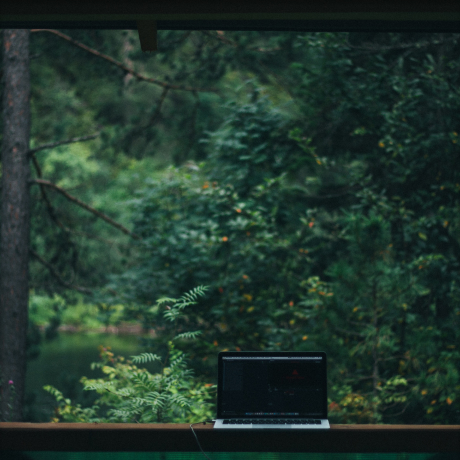

Traveling in Russia
The real country is not in the news, but here.

YOUR SHELF IS THE TOP ONE
What didn't we see there?
According to VTSIOM surveys, 95% of Russians dream of going somewhere, but only 36% plan to spend a vacation in their native country. Like, what didn't we see here at home? In fact, Russia is a whole universe with the gentle sea of the South, dense forests of the Sayan mountains and the harsh ice of the Putorana plateau. And you can see all these beauties without millions on your account, a foreign passport and many hours of flights. For example, Vera Bashmakova-a brave young mother who took three children in her arms, sat them in her Lada and drove 20 thousand kilometers across her native country. We have selected and described some interesting places worthy of your vacation.
- Time zone 11
- UNESCO natural heritage sites 12
- UNESCO cultural heritage sites 16
- Nature reserve 105
- Airports' 241
Curonian spit

Here, in the middle of forests and sand dunes, you can see two water horizons — the calm Curonian lagoon on one side and the rippling waves of the Baltic sea on the other. A unique natural area on the edge of the Russian enclave.
This is not the end of the Kaliningrad region. For the traveller and Explorer, there is also the westernmost point of Russia, the Baltic spit, and the German heritage of a scattering of small seaside towns. The atmosphere of these places excludes fuss, dipping into the tranquility of nature and the smell of steel, cool sea.
Kola
Almost the entire Peninsula is located above the Arctic circle. The Sami tundra, from which to the South — the taiga, and to the North-the Arctic ocean, pretending to be the Barents sea.
You may have watched Zvyagintsev and even heard the story of the Arctic festival in Teriberka. Perhaps the word "Khibiny" did not remain under the snow of school memories of geography lessons. You may not have been interested in the ultra-deep borehole that penetrates the earth's crust, but you have long been covered with apathy from apatites. But your dream to see the Northern lights begins to come true with a ticket to Murmansk.
Altai

Altai is one of the most beautiful places in Russia. First of all, because of the mountains: if you go along the ridge, you will see slopes dotted with pine trees, mountain rivers and lakes. And if you open the car Windows, you can get acquainted with the invisible miracle of these places-the mountain air.
The climate in Altai is moderate, so it is best to go here in the summer. This way you will see all the variety of local flora and fauna. Moose roam the forests of Altai, eagles fly over the ridges, and ROE deer graze on the plains. And the famous manuls are also inhabitants of the Altai territory.
Winter Baikal
Everyone knows Baikal as the largest lake in the world. Many people also know that this is the largest source of fresh water and one of the most beautiful places in Russia.
Of course, this is all true. But the lake ideal for competitions skijoring. This is a sport where a skier ties himself to a motorcycle, and the tandem tries to develop as much speed as possible on the ice. In March 2019, the Baikal mile festival set a world record of 197.011 km/h.
Karelia
Siberia does not end in the Urals, but in Karelia: the Siberian larch that forms the taiga does not grow West of the vodlozer. But here it stretches for 30 meters — the forests of Karelian national parks have never known an axe because of impassable swamps. Some pines are more than half a Millennium old. Touch a living being who saw the sun before Ivan the terrible saw it. You can't find a trail for a hundred kilometers in a virgin forest. And on rare paths, trees a few meters from the ground are marked with bear claws. So that everyone knows who is the boss.